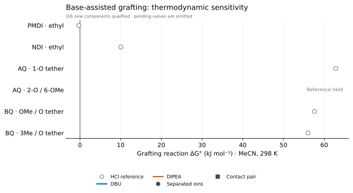

Grafting reference results · Practical chemistry
6/6 components qualified; 0 preserved failures. Reload for updates.
Exploratory MeCN thermodynamics. No candidate is cleared for synthesis by this pilot. Reaction barriers, competing base alkylation, salt precipitation and experimental yields remain unestablished.
Base required; BQ candidates retained for evaluation. Both BQ designs and AQ-1-O have favorable modeled DBU/DIPEA reactions. Positive HCl-reference values alone do not exclude them. AQ-2-O/6-OMe remains unresolved because of precursor QC.
Each base is modeled as the neutral reagent, protonated ion and chloride contact pair. Connected endpoints show two ionic models, not statistical error bars. The HCl-reference results remain separate.

Vector PDF · Data and source receipts · Status
| Candidate | HCl reference | DBU ions | DBU pair | DIPEA ions | DIPEA pair |
|---|---|---|---|---|---|
| PMDI · ethyl | -0.3 | -103.1 | -107.9 | -71.3 | -76.4 |
| NDI · ethyl | +10.1 | -92.7 | -97.5 | -60.9 | -66.1 |
| AQ · 1-O tether | +62.9 | -39.9 | -44.7 | -8.1 | -13.3 |
| AQ · 2-O / 6-OMe | Pending | Pending | Pending | Pending | Pending |
| BQ · OMe / O tether | +57.6 | -45.1 | -49.9 | -13.3 | -18.5 |
| BQ · 3Me / O tether | +56.0 | -46.7 | -51.5 | -14.9 | -20.1 |
All values: kJ/mol, 298.15 K. Explicit 1-atm → 1-M correction is applied when the number of independently translating solutes changes. Contact-pair entropy and conformer sampling are approximate.
Precedents: AQ carboxylate/DBU in NMP; ferrocene carboxylate/DIPEA in DMF. Applying these bases to our exact phenolic candidates in MeCN is a proposed test.